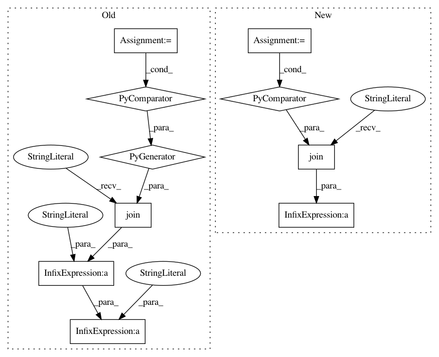

d050c00e6b9bd39b650e2f42108dce65821c4319,Orange/widgets/data/owfile.py,OWFile,OWFile_1,#,21
Before Change
// registeredFileTypes = [ft for ft in orange.getRegisteredFileTypes()
// if len(ft)>2 and ft[2]]
registered_file_types = []
dlgFormats = (
"All readable files (*.tab *.xlsx *.txt *.basket)\n"
"Tab-delimited files (*.tab)\n"
"Excel files (*.xlsx)\n"
"Text file (*.txt)\n"
"Basket files (*.basket)\n" +
"".join("{0} ({1})\n".format(*ft) for ft in registered_file_types) +
"All files (*)")
formats = {".tab": "Tab-delimited file", ".xlsx": "Excel file",
".txt": "Text file", ".basket": "Basket file"}
formats.update(dict((ft[1][2:], ft[0]) for ft in registered_file_types))
After Change
recent_files = Setting(["(none)"])
new_variables = Setting(False)
dlgFormats = (
"All readable files ({})\n".format(
" ".join("*" + c.EXT for c in io.FILE_WRITERS.values())) +
"\n".join("{c.NAME} (*{c.EXT})".format(c=c) for c in io.FILE_FORMATS))
def __init__(self):
super().__init__()
self.domain = None
In pattern: SUPERPATTERN
Frequency: 3
Non-data size: 10
Instances
Project Name: biolab/orange3
Commit Name: d050c00e6b9bd39b650e2f42108dce65821c4319
Time: 2015-03-27
Author: janez.demsar@fri.uni-lj.si
File Name: Orange/widgets/data/owfile.py
Class Name: OWFile
Method Name: OWFile_1
Project Name: vatlab/SoS
Commit Name: 891ec4af721709367842540bcab909c12a85f3de
Time: 2017-01-03
Author: ben.bob@gmail.com
File Name: sos/utils.py
Class Name:
Method Name: stable_repr
Project Name: vatlab/SoS
Commit Name: 8978e5949e9726fd55948167b5aa6ec2eda0f38a
Time: 2017-01-03
Author: ben.bob@gmail.com
File Name: sos/utils.py
Class Name:
Method Name: stable_repr